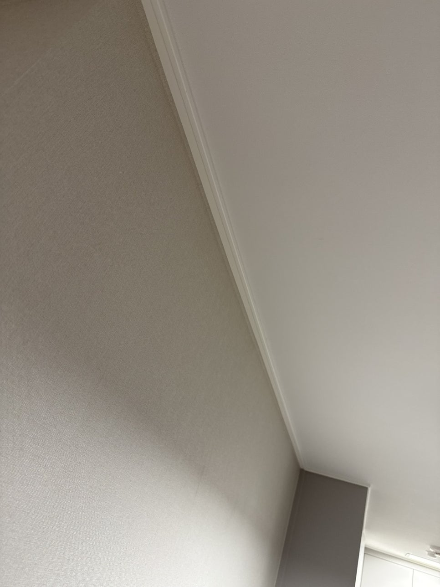
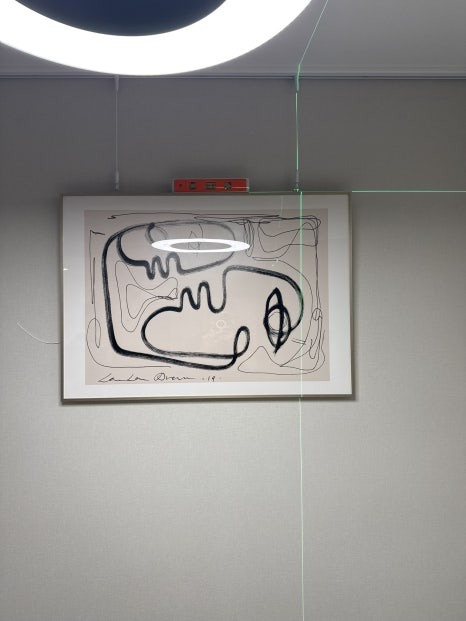

올림픽파크포레온 마이너스 몰딩 액자레일 설치
올림픽파크포레온 거실입니다. 마이너스 몰딩으로 마감된 집에 액자레일을 추가로 설치했습니다.
몰딩을 뺀 집에 선을 다시 넣는 일입니다
마이너스 몰딩은 천장과 벽 사이 선을 없애려고 선택하는 마감입니다. 거기에 레일을 붙이면 없애려던 선이 다시 생깁니다. 그래서 레일 위치와 색을 홈 라인에 맞춰 눈에 덜 띄게 잡았습니다.
신축이라 고정 위치를 먼저 맞췄습니다
새 집이라 어디에 자국이 생기는지 미리 말씀드리고 시작했습니다. 천장에서 받쳐줄 수 있는 자리를 찾아 고정 지점을 정했습니다.
깔끔한 마감과 실용성을 같이 가져갔습니다
마감 라인은 그대로 두고, 액자는 원하는 자리로 옮겨 걸 수 있게 됐습니다.
시공 사진


올림픽파크포레온 마이너스 몰딩, 자주 묻는 질문
마이너스 몰딩인데 레일이 눈에 띄지 않나요?
홈 라인과 높이를 맞추고 천장색에 가까운 레일을 쓰면 가까이 가야 보이는 정도입니다.
신축 입주 전에도 되나요?
입주 전이 오히려 편합니다. 가구가 없어 작업 공간이 넓고 먼지 걱정도 적습니다.
다른 서비스 · 사례 · 정보
서비스
시공사례
알아두면 좋은 것
올림픽파크포레온 마이너스 몰딩 상담, 사진 한 장이면 됩니다
천장이나 벽 사진과 위치를 보내주시면 작업 범위와 일정을 안내해 드립니다.
☎ 010-7360-1917 시공 후기 보기